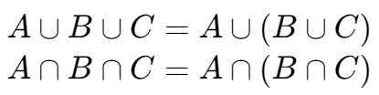

集合
Sample space,, /
Empty set,,
事件间的关联
| 事件关系 | 符号表示 |
|---|---|
| contain,, | |
| complement,, | |
| union,, | |
| intersect,, | |
| disjoint,, | |
| difference,, |
运算法则
Associative Properties,,

Distributive,,
De Morgan's Law
Sample space,, /
Empty set,,
| 事件关系 | 符号表示 |
|---|---|
| contain,, | |
| complement,, | |
| union,, | |
| intersect,, | |
| disjoint,, | |
| difference,, |
Associative Properties,,
Distributive,,
De Morgan's Law